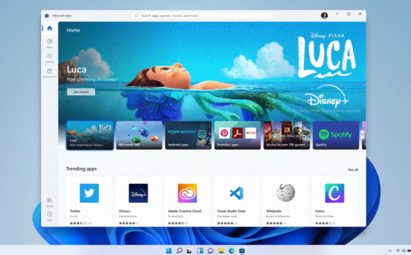

02
WEB / EXPERIÊNCIA
Página de viagens
Uma experiência visual com roteiros, dicas e imagens pensada para inspirar novos destinos.
QA & Desenvolvimento Full Stack
Sou Igor Campos. Investigo problemas, testo possibilidades e transformo ideias em experiências digitais claras e confiáveis.
01 / SOBRE
Gosto de entender como as coisas funcionam — e, principalmente, como podem funcionar melhor.
Sou estudante de Ciência da Computação na UESC e profissional de Quality Assurance, com interesse em desenvolvimento de software, redes de computadores e cibersegurança. Tenho experiência com testes e análise de aplicações, além de desenvolver projetos com JavaScript, Node.js, Python e bancos de dados.
Meu trabalho combina investigação, aprendizado contínuo e a busca por soluções práticas, eficientes e confiáveis.
Áreas de foco
02 / PROJETOS SELECIONADOS
Uma seleção de estudos e interfaces construídos para praticar produto, código e experiência.
WEB / FINANÇAS PESSOAIS
Projeto para registrar, organizar e acompanhar gastos pessoais de forma simples e objetiva.
Ver no GitHubWEB / EXPERIÊNCIA
Uma experiência visual com roteiros, dicas e imagens pensada para inspirar novos destinos.

03INTERFACE / E-COMMERCE
Estudo de uma loja virtual responsiva, com foco em navegação clara e apresentação de produtos.
03 / CONTATO
Me conte um pouco. Ao enviar, abrirei uma conversa pronta no WhatsApp para continuarmos por lá.
Respondo assim que possível.